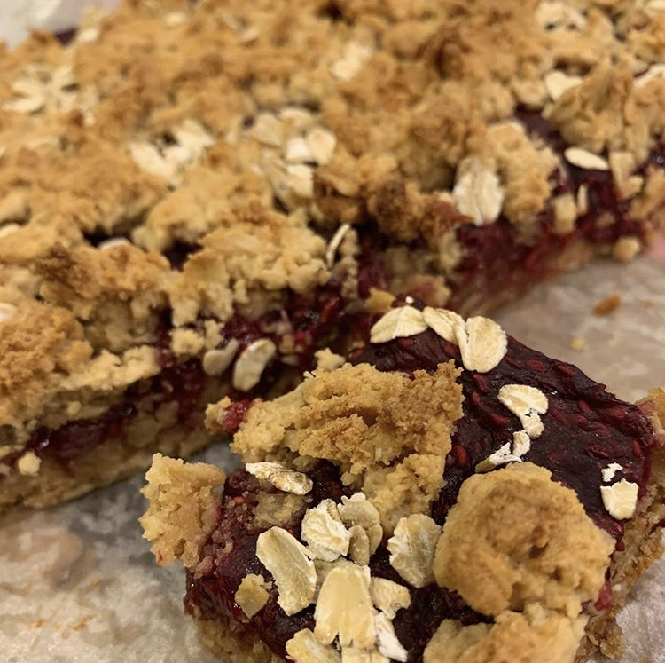

Raspberry Crumble Bars
These are a great healthy and yummy dessert, and you can make these as mixed berry bars or just do one kind of berry like I did!
Made by Maryam
Total Time
2 hour and 10 minutes
Servings
12 bars
Ingredients for Filling
2 cups
Frozen Berries
1 tbsp
Lemon Juice
2 tbsp
Maple Syrup
1/4 cup
Arrowroot Powder
Ingredients for Crumble
1 3/4 cup
Almond Flour
1 cup
Oats (we used steel cut)
1 tsp
Baking Powder
1/2 tsp
Salt
1/2 cup
Maple Syrup
1/3 cup
Peanut Butter
Directions
Preheat oven to 325°. Line bottom of a 8x8 pan with parchment paper.
In a medium saucepan on low heat, add the frozen berries. Mash with a fork or spatula while they are heating.
Add lemon juice and maple syrup and heat for another minute until mixed in.
Once it turns into a paste consistency, add arrowroot powder to thicken it while stirring constantly for another 2-3 minutes.
Allow the filling to cool for 10 minutes and then chill in the frige for 30 minutes.
In a large bowl mix all of the dry ingredients for the crumble and mix together.
Then incrementally add in the peanut butter and maple syrup, mixing constantly with your hands or a spatula until it forms a dough.
Leave 1/2 of the dough aside to use as the top crumble, and press the remaining dough on to the bottom of the pan in an even layer.
Next layer the raspbery filling on top. Then sprinkle the remaining crumble, followed by the oats in the spots with less crumble.
Bake for 35-40 minutes and let cool before cutting. Enjoy!